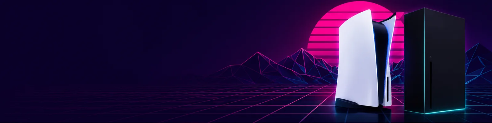

Welche Konsole für GTA 6?
GTA VI erscheint ausschließlich für PS5 und Xbox Series X|S – wer noch keine Konsole hat, muss also bis zum 19. November eine Entscheidung treffen. Hier sind alle Preise, die erwartete Performance und eine ehrliche Einordnung, was sich für wen lohnt.

Die Preise im Überblick (UVP Deutschland, Stand August 2026)
| Konsole | UVP | Anmerkung |
|---|---|---|
| Xbox Series S (512 GB) | 499,99 € | Nur digital; 512 GB werden bei GTA VI knapp |
| Xbox Series S (1 TB) | 599,99 € | Nur digital |
| PS5 Digital Edition | 599,99 € | 825 GB SSD, kein Laufwerk |
| PS5 (mit Laufwerk) | 649,99 € | 1 TB SSD |
| Xbox Series X Digital | 749,99 € | 1 TB SSD, kein Laufwerk |
| Xbox Series X | 799,99 € | 1 TB SSD, mit Laufwerk |
| PS5 Pro | 899,99 € | 2 TB SSD, kein Laufwerk (nachrüstbar) |
Beide Hersteller haben die Preise 2026 kräftig erhöht (Sony +100 € im April, Microsoft bis +200 € im August). Im Handel liegen die Straßenpreise oft unter der UVP – die PS5 Pro gab es zwischenzeitlich für 799 €, Xbox-Konsolen sind aktuell allerdings vielerorts schlecht lieferbar. Ein Preisvergleich kurz vor dem Kauf lohnt immer.
Wo läuft GTA VI am besten?
Was Rockstar sagt Offiziell
Wenig. Offizielle Angaben zu Auflösung oder Bildrate gibt es nicht. Bekannt ist: Trailer 2 wurde komplett auf einer Basis-PS5 aufgenommen – ein Statement, dass das Spiel auch ohne Pro-Hardware gut aussehen soll. Exklusive Inhalte für eine Plattform sind nicht angekündigt.
Was erwartet wird Erwartet
Branchenbeobachter (u. a. Digital Foundry) rechnen auf allen Konsolen mit 30 fps – wie bei Red Dead Redemption 2. Die PS5 Pro dürfte über ihr KI-Upscaling PSSR die höchste Bildqualität liefern; ein 60-fps-Modus ist auf keiner Konsole bestätigt. Die Series S wird das Spiel abbilden, aber mit sichtbaren Abstrichen bei Auflösung und Details.
Ist die PS5 Pro das Geld wert?
Die Pro kostet 250 € mehr als die PS5 mit Laufwerk und 300 € mehr als die Digital Edition. Dafür gibt es die schnellste Konsolen-GPU dieser Generation (16,7 vs. 10,2 TFLOPS), das KI-Upscaling PSSR und 2 TB Speicher – bei einem Spiel unbekannter, aber sicher gewaltiger Downloadgröße kein schlechtes Argument.
- Dafür spricht: beste zu erwartende GTA-VI-Darstellung auf Konsole, doppelter Speicher, zukunftssicherste Option bis zur nächsten Generation.
- Dagegen spricht: kein bestätigtes Pro-Feature für GTA VI, kein Laufwerk (GTA VI braucht ohnehin keins – die Box enthält nur einen Code), und für die Preisdifferenz zur Digital Edition bekommt man fast drei GTA-VI-Ultimate-Editionen.
Kurz: Wer das Maximum will und den Aufpreis nicht spürt, macht mit der Pro nichts falsch. Wer primär GTA VI spielen will, bekommt mit jeder PS5 das volle Spiel.
Die schnelle Entscheidungshilfe
Kleinstes Budget
Xbox Series S (1 TB) für 599,99 € – Vorsicht bei der 512-GB-Version: Bei einem Spiel, das locker über 100 GB liegen dürfte, wird der Platz sofort eng. Dazu kommt: Die PS5 Digital Edition kostet genauso viel und ist deutlich leistungsstärker.
Bester Allrounder
PS5 Digital Edition (599,99 €) oder PS5 mit Laufwerk (649,99 €) – volle Leistung der Basis-Konsole, auf der Rockstar das Spiel präsentiert, und die Plattform, auf der laut Marktforschern rund drei Viertel aller Vorbestellungen laufen. Das Laufwerk lohnt nur, wer Discs anderer Spiele oder Blu-rays nutzt.
Maximale Qualität
PS5 Pro (899,99 €) – die technisch beste Option für GTA VI, mit dem größten Speicher. Der Aufpreis kauft Bildqualität, kein exklusives Gameplay.
Xbox-Ökosystem
Xbox Series X (ab 749,99 €) – die richtige Wahl, wenn Freunde und Spielebibliothek bereits bei Xbox liegen oder der Game Pass wichtig ist. Technisch liegt sie zwischen PS5 und Pro; GTA VI erscheint hier vollwertig.
Alle Einschätzungen basieren auf offiziellen Preisen, Hardware-Daten und Marktforschungszahlen – nicht auf finalen GTA-VI-Benchmarks, die es vor Release nicht geben kann.
 TVFussball.de
TVFussball.de
 TVKinderprogramm.de
TVKinderprogramm.de
 Mühle Meister
Mühle Meister